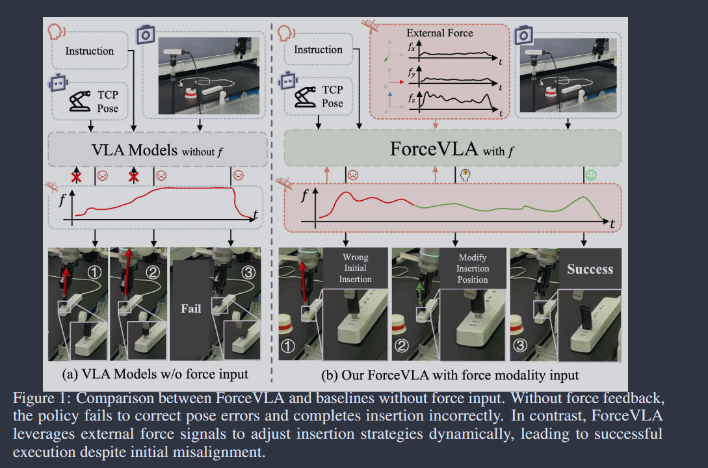
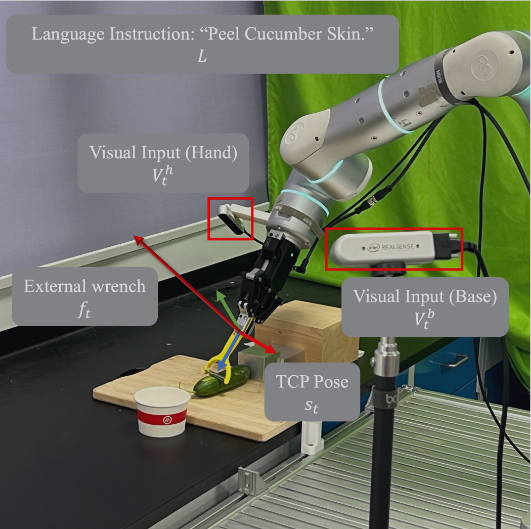
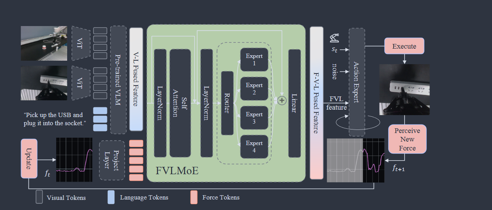

Original Zotero notes associated with papers in this category. Available note images are included. Missing images are marked below.
Key: FVLMoE, ForceVLA-Data



Formulation: base and hand visual inputs + proprioceptive state + external force-torque readings
Key: FVLMoE, ForceVLA-Data
Formulation: base and hand visual inputs + proprioceptive state + external force-torque readings